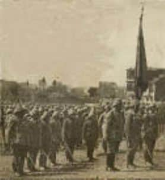

Asteğmen İbrahim Hayreddin komutasında Balıkçıdamları’ndaki
1. Takım’ın hareketi:
1. Takım’ın 60-70 kişilik kuvveti vardı. Bunlar düşmanı ay ışığında iken yaklaşır gibi görmüşler ve siperleri tutarak neticeyi beklemişlerdir. Ay battıktan sonra ilk çıkarma kuvvetlerini taşıyan teknelerin kendilerine doğru gelmekte olduğunu görürünce ateş açmak için yaklaşmalarını beklemişlerdir. Bu tekneler burunlarını Arıburnu yönüne çevirmişler ve oraya yaklaştıklarında karanlık içinde iki tarafın ateşe başladıklarını görmüşler ve -karanlık olmasına rağmen- ateşe başlamışlardır.
Hava ağarmaya başladığı zaman Arıburnu kuzeyine doğru ve daha sonra kendilerine doğru yanaşmak isteyen çıkarma kuvvetlerini iyi isabetlerle ateşe tutmuşlar ve kendi yakınlarında karaya can atan bir miktar düşman erine ateş ederek onlara kayıp verdirmişlerdir.
Artık düşmanın kendi etki alanları içinde kuvvet çıkarmadığını görmüşlerdir. Düşmanın Yükseksırt’ı işgal ettiğini ve Kocaçimen’e doğru ilerlemek istediğini anlamışlar, bunun üzerine Azmakdere ağzı yönündeki postalarına, mıntıkalarının gözetleme ve güvenlik görevini bırakarak Sazlıdere izini takip ederek Düztepe civarına çıkmışlardır. Takım komutanı; burada düşmanın önünü kesmek çarelerini aramış ve elde kalan tek tük fişeklerle düşmana mevcudiyetini hissettirmiş ve geriye çekilmeye başlamıştır. Bu sırada Kemalyeri mevkiine gelerek düşmana hücum eden 27. Alay’la irtibat kurarak cephane tedarik etmişler; önce bu alayın 3. Taburu’na bağlı cephenin en sağındaki takımla irtibata geçmişler ve bu takımla beraber 57 Alay bölgeye gelinceye kadar Conkbayırı yolunu düşmana kapamışlardır. Bu takım daha sonra 57. Alay’a katılarak bölüğün şerefini ve mevcudiyetini bu alay emrinde temsil etmiştir.
25 Nisan günü 1. Takım vazifesini hakkıyla ifa etmiştir. Düşmanı kendi mıntıkasına yanaştırmamıştır. İngiliz kaynaklarında; bu takımın karşısına çıkmak isteyen altı sandaldaki 140 kişiden ancak 18 kişinin kurtulabildiği belirtilmektedir.
7. Bölüğün hareketi ve komutanı Teğmen
Asım Efendi’nin ifadesi:
7. Bölük 25 Nisan gecesi Kabatepe noktasında topların yanında bulunuyordu:
Düşman gemilerini ve bazı fenerlerini uzaklarda gördük ve bunları gözle takip ettik ve hazırlandık. Bu tekneler Arıburnu’na ancak çok yaklaştığı zaman oradaki askerlerimiz tarafından üzerlerine ateş açıldı, teknelerden de makineli tüfeklerle karşılık verildi ve biz de mantelli topla ateşe başladık.
* * *
25 Nisan sabahı ilk 4.000 kişilik çıkarma kuvvetini durdurmak yükünü 27. Alay’ın 2. Taburu’nun 4. Bölüğünün sadece 160 kişiden oluşan 2. ve 3. Takımları üstlenmiştir. 4. Bölüğün 1. Takımı Balıkçıdamları’ndan muharebeye katılmıştır. Bu takımlar denizden ve karadan gelen ateş altında kendilerine yardım için gelecek bir kuvvetin olmadığını bilerek mahvoluncaya kadar çarpışmışlardır.
Avustralya birliklerine çok ağır zayiat verdirerek çıkarma kuvvetlerini destekleyen filonun yoğun ateşine rağmen mevziini savunan 4. Bölüğün, Balıkçıdamları’ndaki 1. Takımı; Cesarettepe’nin işgali, Conkbayırı’nın tehlikeye düşmesi, takımdan geriye iki manga kadar bir kuvvet kalması ve de cephanelerinin bitmesi üzerine bin bir güçlükle Conkbayırı’nın güneyindeki hâkim araziye çekilmeyi başarmıştır.
İsmail Hakkı Efendi komutasında Keltepe’ye yerleştirilen 2. Taburun 3. Bölüğünün bir takımı, 25 Nisan sabahı teknelerin geldiğini görür görmez deniz kenarındaki hâkim siperleri tutmuştur. Küçük Arıburnu istikametinde düşmana yan ateş açmış, kendilerine doğru ilerlemek isteyen düşmanı ateşiyle men ederek onları Büyükdere’ye sokmuş ve buradaki düşman ilerleyişini başarı ile durdurmuştur.
Kabatepe üzerine ilerlemek isteyen Anzak kuvvetleri; 3. Bölüğün inatla savunması, Kabatepe bölgesindeki topçu bataryasının isabetli atışları ve tabur ihtiyatı olan 1. Bölüğün karşı koyması ile durdurulmuştur.
Saat 05.00’te üç bölükten oluşan bir Anzak kuvveti Keltepe’ye tekrar saldırmış, burada bulunan 3. Bölüğün bir takımına ağır zayiat verdirerek takımı geri atmış ve Kanlısırt üzerine yayılmıştır.
4. Bölüğün 3. Takımı çıkarma saatinden beri Cesarettepe ve Yükseksırt’ta direniyordu. Yeni bir Anzak taburu ve Korkudere-si’nden ileri sokulabilen takviye kuvvetlerinin saldırısı karşısında, bölük komutanı ile takım komutanı yaralanmış takımın büyük kısmı ise şehit olmuştu. Kalanlar geri çekilip Cesarettepe kuzeyine gelebilmişlerdi. Artık Arıburnu ve hemen gerisindeki sırtlarda hiçbir piyademiz kalmamıştı. 1. Avustralya Tümeni, Conkbayırı istikametinde serbest kalmıştı. Ancak Avustralyalılar bu kez önce 27. Alay’a daha sonra 57. Alay’a çatıp hüsrana uğrayacak ve ricata mecbur kalacaktır.

27. Alay’ın sancak merasimi
Kıyas kabul edilemez derecede üstün düşman kuvvetlerine karşı kendilerini feda ederek arkadan gelecek Türk kuvvetlerine zaman kazandıran ve bu uğurda ölen kahraman 4. Bölük askerleri hakkında bağlı bulundukları 27. Alay’ın Komutanı Şefik Bey övgü ve takdir hisleriyle şöyle söyler:
Arıburnu bölgesine yapılan 4 bin kişilik çıkarmayı durdurmak yükünü taşıyan 2. ve 3. Takımlar, denizden ve karadan yedikleri ateş altında saldıranlarla, mahvoluncaya kadar burun buruna çarpışmışlardır. Bunların en fazla saygı gösterilmeye lâyık olan hareketleri; yakınlarda kendilerine yardım için gelecek bir ihtiyat kuvvetinin yokluğunu bilmelerine rağmen mahvolasıya kadar çarpışmaları ve bu şekilde vazifelerini yapmaya çalışmış olmalarıdır.
Arıburnu’nda düşmana karşı vatanın kapıcılığını yapmış olan 27. Alay’ın 2. Tabur 4. Bölüğü; vazifesi uğrunda kendisini tamamen feda etmiş oldu. Bununla birlikte bu bölüğün komutanıyla bütün takım komutanları, aldıkları ağır yaralarını tedavi ettirdikten sonra yine alaylarına katılmışlar yeniden kurulan şerefli bölüklerinin komuta vazifesini üzerine almışlar ve sonraki muharebelere de katılmışlardır. O halde 4. Bölüğümüzün şehit, yaralı ve bütün kadrosunun önünde hürmetle eğilmek vazifesi de bize düşer.